أحمد بن علي بن حجر العسقلاني
Author
About the author
ابن حَجَر العَسْقلاني (٧٧٣ - ٨٥٢ هـ = ١٣٧٢ - ١٤٤٩ م)
أحمد بن علي بن محمد الكناني العسقلاني، أبو الفضل، شهاب الدين، ابن حَجَر
• من أئمة العلم والتاريخ. أصله من عسقلان (بفلسطين) ومولده ووفاته بالقاهرة.
• ولع بالأدب والشعر ثم أقبل على الحديث، ورحل إلى اليمن والحجاز وغيرهما لسماع الشيوخ،
• وعلت له شهرة فقصده الناس للأخذ عنه وأصبح حافظ الإسلام في عصره، قال السخاويّ: (انتشرت مصنفاته في حياته وتهادتها الملوك وكتبها الأكابر)
• وكان فصيح اللسان، راوية للشعر، عارفا بأيام المتقدمين وأخبار المتأخرين، صبيح الوجه.
• وولي قضاء مصر مرات ثم اعتزل.
أما تصانيفه فكثيرة جليلة، منها:
• (الدرر الكامنة في أعيان المئة الثامنة - ط) أربعة مجلدات
• (لسان الميزان - ط) ستة أجزاء، تراجم،
• (الإحكام لبيان ما في القرآن من الأحكام - خ)
• (ديوان شعر - خ) رأيته في الاسكوريال (الرقم ٤٤٤) وطبع في الهند
• (الكافي الشاف في تخريج أحاديث الكشاف - ط)
• (ذيل الدرر الكامنة - خ)
• (ألقاب الرواة - خ)
• (تقريب التهذيب - ط) في أسماء رجال الحديث
• (الإصابة في تمييز أسماء الصحابة - ط)
• (تهذيب التهذيب - ط) في رجال الحديث، اثنا عشر مجلدا
• (تعجيل المنفعة بزوائد رجال الأئمة الأربعة - ط)
• (تعريف أهل التقديس - ط) ويعرف بطبقات المدلّسين
• (بلوغ المرام من أدلة الأحكام)
• (المجمع المؤسس بالمعجم المفهرس - خ) جزآن، أسانيد وكتب [طُبع]
• (تحفة أهل الحديث عن شيوخ الحديث - خ) ثلاث مجلدات
• (نزهة النظر في توضيح نخبة الفكر - ط) في اصطلاح الحديث
• (المجالس - خ) بخط البقاعي ١٩٣ مجلسا، قال الميمني (في مذكراته - خ): نسخة جليلة مهمة نادرة
• (القول المسدَّد في الذب عن مسند الإمام أحمد - ط)
• (ديوان خطب - ط)
• (تسديد القوس في مختصر الفردوس للديلي - خ) ستة مجلدات، تنقص الثالث
• (تبصير المنتبه في تحرير المشتبه - ط) في أربعة أجزاء
• (رفع الإصر عن قضاة مصر - ط)
• (إنباء الغمر بأنباء العمر - ط) في مجلدين ضخمين
• (إتحاف المَهرة بأطراف العشرة - خ) حديث [طُبع]
• (الإعلام في من ولي مصر في الإسلام - خ)
• (نزهة الألباب في الألقاب - خ) منه نسخة نفيسة في جامعة الرياض (٥٤ ورقة الرقم ٥٢) كما في مذكرات الميمني - خ [طُبع]
• (الديباجة - ط) في الحديث
• (فتح الباري في شرح صحيح البخاري - ط)
• (التلخيص الحبير في تخريج أحاديث الرافعي الكبير - ط)
• (بلوغ المرام من أدلة الأحكام - ط) مع شرحه (سبل السلام في شرح بلوغ المرام - ط) لمحمد بن إسماعيل الأمير
• (تغليق التعليق - خ) ستة أجزاء منه، في الحديث (١) [طُبع].
ولتلميذه السخاوي كتاب في ترجمته سماه (الجواهر والدرر في ترجمة شيخ الإسلام ابن حجر) في مجلد ضخم (٢).
_________
(١) الأزهرية ١: ٤٣٢ الطبعة الثانية.
(٢) التبر المسبوك ٢٣٠ وابن شقدة - خ - والضوء اللامع ٢: ٣٦ والبدر الطالع ١: ٨٧ وخطط مبارك ٦: ٣٧ وآداب اللغة ٣: ١٦٥ ولسان الميزان ٦: خاتمته لمصحح طبعه. والدرر الكامنة ٤: خاتمته للناشر. وبدائع الزهور ٢: ٣٢ وفيه وفاته سنة ٨٥٤ هـ والفهرس التمهيدي ٣٩٦ و ٤٢٣ و ٤٢٤ و ٤٤٢، و ٥٦٣ ودائرة المعارف الإسلامية ١: ١٣١ وانظر ترجمته لنفسه في كتابه رفع الإصر ١: ٨٥.
نقلا عن الأعلام للزركلي، مع إضافات يسيرة بين [معقوفين]
- أمالي الأذكار في فضل صلاة التسبيح
- إتحاف المهرة بالفوائد المبتكرة من أطراف العشرة
- إطراف المسند المعتلي بأطراف المسند الحنبلي
- إنباء الغمر بأبناء العمر - ت حبشي
- إنباء الغمر بأبناء العمر - ط الهندية
- الأحاديث العشرة العشارية الاختيارية لابن حجر
- الأمالي الحلبية
- الأمالي السفرية الحلبية
- الأمالي المطلقة
- الإصابة في تمييز الصحابة
- الإمتاع بالأربعين المتباينة السماع
- الإيثار بمعرفة رواة الآثار
- التلخيص الحبير - ط أضواء السلف
- التلخيص الحبير - ط العلمية
- التلخيص الحبير - ط قرطبة
- الدراية في تخريج أحاديث الهداية
- الدرر الكامنة في أعيان المائة الثامنة - ط الهندية الأولى
- الدرر الكامنة في أعيان المائة الثامنة - ط الهندية الثانية
- الزهر النضر في حال الخضر
- العجاب في بيان الأسباب
- القول المسدد في الذب عن مسند أحمد
- الكلام على حديث امرأتي لا ترد يد لامس لابن حجر
- المجمع المؤسس للمعجم المفهرس
- المرحمة الغيثية بالترجمة الليثية
- المطالب العالية بزوائد المسانيد الثمانية
- المطالب العالية محققا
- المعجم المفهرس = تجريد أسانيد الكتب المشهورة والأجزاء المنثورة
- المنتخب من أمالي ابن حجر من تخريج مختصر ابن الحاجب
- النكت على صحيح البخاري
- النكت على كتاب ابن الصلاح لابن حجر
- الوقوف على الموقوف
- انتقاض الاعتراض في الرد على العيني في شرح البخاري
- بلوغ المرام من أدلة الأحكام - ت الفحل
- بلوغ المرام من أدلة الأحكام ت الزهيري
- تبصير المنتبه بتحرير المشتبه
- تخريج حديث الأسماء الحسنى
- تعجيل المنفعة
- تغليق التعليق
- تقريب التهذيب
- تقريظ لابن حجر على الرد الوافر
- تهذيب التهذيب - ط الرسالة
- تهذيب التهذيب - ط المعرفة
- تهذيب التهذيب - ط الهندية
- تهذيب التهذيب - ط دبي
- جزء في طرق حديث لا تسبوا أصحابي
- رفع الإصر عن قضاة مصر
- زهر الفردوس = الغرائب الملتقطة من مسند الفردوس
- سلسلة الذهب
- طبقات المدلسين = تعريف أهل التقديس بمراتب الموصوفين بالتدليس
- عوالي مسلم لابن حجر
- فتح الباري بشرح البخاري - ط السلفية
- قطعة من نتائج الأفكار في تخريج أحاديث الأذكار
- لسان الميزان - ت أبي غدة
- لسان الميزان - ط الهندية
- مختصر زوائد مسند البزار على الكتب الستة ومسند أحمد
- مسائل أجاب عنها الحافظ ابن حجر العسقلاني
- معجم الشيخة مريم - رسالة جامعية
- معجم الشيخة مريم - ط الثقافة
- موافقة الخبر الخبر في تخريج أحاديث المختصر
- نتائج الأفكار في تخريج أحاديث الأذكار
- نخبة الفكر - ت القاسم
- نخبة الفكر - ط دار الحديث
- نزهة الألباب في الألقاب
- نزهة السامعين في رواية الصحابة عن التابعين
- نزهة النظر في توضيح نخبة الفكر - ت الرحيلي ط 3
- نزهة النظر في توضيح نخبة الفكر - ت القاسم
- نزهة النظر في توضيح نخبة الفكر - ت عتر
- نظم اللآلي بالمائة العوالي
- هداية الرواة - مع تخريج المشكاة الثاني للألباني
- هدي الساري مقدمة فتح الباري - ط السلفية
Books
|
Book
|
Pages
|
|---|---|
| بلوغ المرام من أدلة الأحكام - ت الفحل | 1,833 |
Resources
 المجموع شرح المهذب النووي ويليه الشرح الكبير للرافعي ويليه تلخيص الحبير لابن حجر
المجموع شرح المهذب النووي ويليه الشرح الكبير للرافعي ويليه تلخيص الحبير لابن حجر
يحيى بن شرف النووي • عبد الكريم بن محمد الرافعي • أحمد بن علي بن حجر العسقلاني
المجموع شرح المهذب النووي ويليه الشرح الكبير للرافعي ويليه تلخيص الحبير لابن حجر
المجموع شرح المهذب النووي ويليه الشرح الكبير للرافعي ويليه تلخيص الحبير لابن حجر
يحيى بن شرف النووي • عبد الكريم بن محمد الرافعي • أحمد بن علي بن حجر العسقلاني
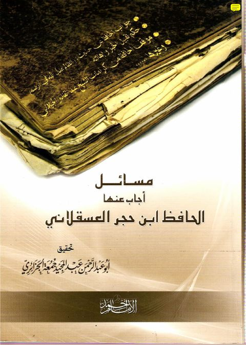
مسائل أجاب عنها ابن حجر مسائل أجاب عنها ابن حجر ابن حجر العسقلاني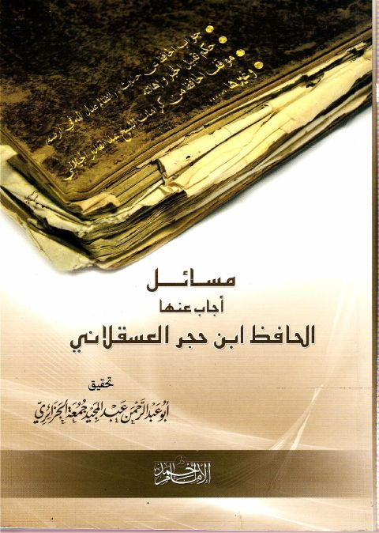
مسائل أجاب عنها الحافظ ابن حجر العسقلاني مسائل أجاب عنها الحافظ ابن حجر العسقلاني أحمد بن علي بن حجر العسقلاني المجمع المؤسس للمعجم المفهرس
المجمع المؤسس للمعجم المفهرس
أحمد بن علي ابن حجر العسقلاني
المجمع المؤسس للمعجم المفهرس
المجمع المؤسس للمعجم المفهرس
أحمد بن علي ابن حجر العسقلاني
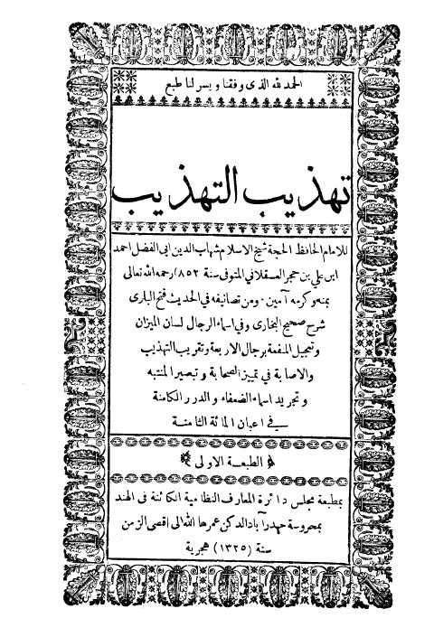
تهذيب التهذيب- ط هندية تهذيب التهذيب- ط هندية أحمد بن محمد بن علي بن حجر العسقلاني تهذيب التهذيب- ط الرسالة
تهذيب التهذيب- ط الرسالة
أحمد بن محمد بن علي بن حجر العسقلاني
تهذيب التهذيب- ط الرسالة
تهذيب التهذيب- ط الرسالة
أحمد بن محمد بن علي بن حجر العسقلاني
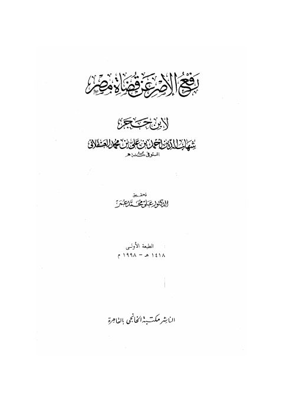
رفع الإصر عن قضاة مصر رفع الإصر عن قضاة مصر أحمد بن محمد بن علي بن حجر العسقلاني لسان الميزان
لسان الميزان
أحمد بن محمد بن علي بن حجر العسقلاني
لسان الميزان
لسان الميزان
أحمد بن محمد بن علي بن حجر العسقلاني
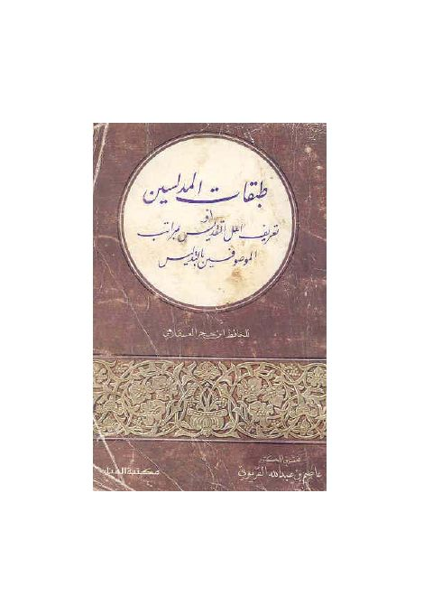
طبقات المدلسين تعريف أهل التقديس بمراتب الموصوفين بالتدليس طبقات المدلسين تعريف أهل التقديس بمراتب الموصوفين بالتدليس أحمد بن محمد بن علي بن حجر العسقلاني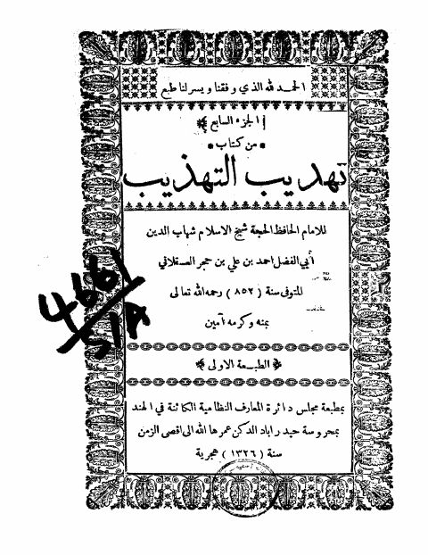
تهذيب التهذيب تهذيب التهذيب أحمد بن محمد بن علي بن حجر العسقلاني نزهة الألباب في الألقاب
نزهة الألباب في الألقاب
أحمد بن علي ابن حجر العسقلاني
نزهة الألباب في الألقاب
نزهة الألباب في الألقاب
أحمد بن علي ابن حجر العسقلاني
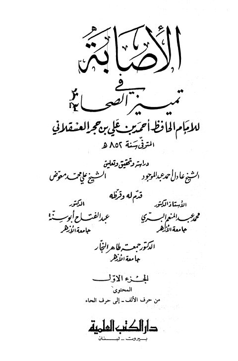
الإصابة في تمييز الصحابة الإصابة في تمييز الصحابة أحمد بن علي بن حجر العسقلاني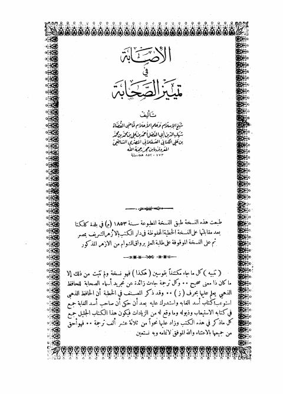
الإصابة في تمييز الصحابة الإصابة في تمييز الصحابة أحمد بن علي بن حجر العسقلاني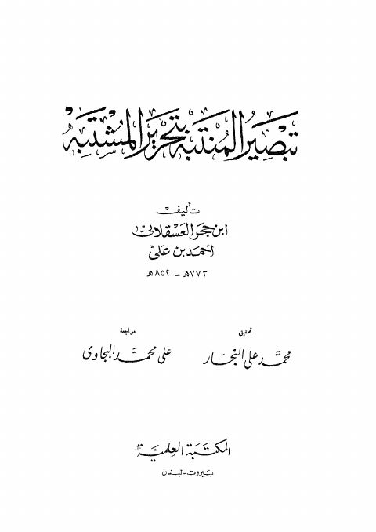
تبصير المنتبه بتحرير المشتبه تبصير المنتبه بتحرير المشتبه أحمد بن محمد بن علي بن حجر العسقلاني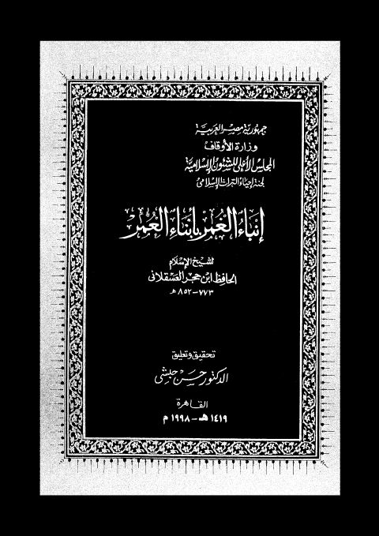
إنباء الغمر بأبناء العمر إنباء الغمر بأبناء العمر الحافظ ابن حجر العسقلاني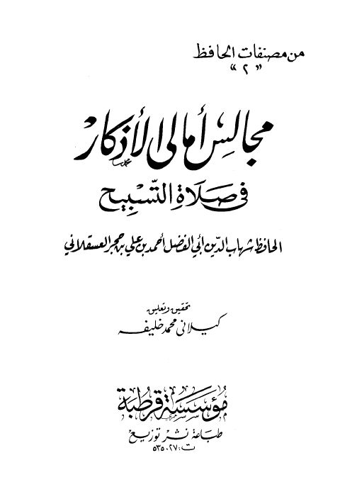
مجالس أمالي الأذكار في صلاة التسبيح مجالس أمالي الأذكار في صلاة التسبيح شهاب الدين أبو الفضل أحمد بن علي بن حجر العسقلاني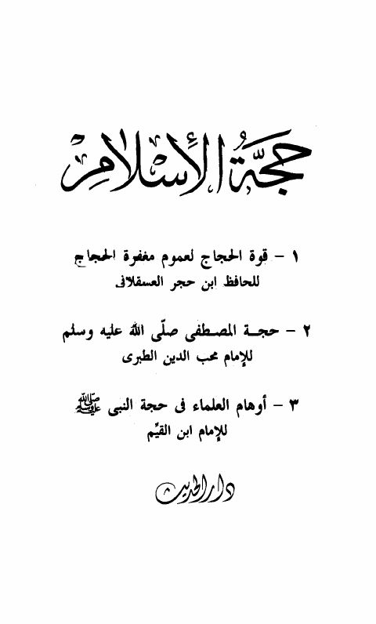
حجة الإسلام حجة الإسلام ابن حجر العسقلاني • محب الدين الطبري • ابن القيم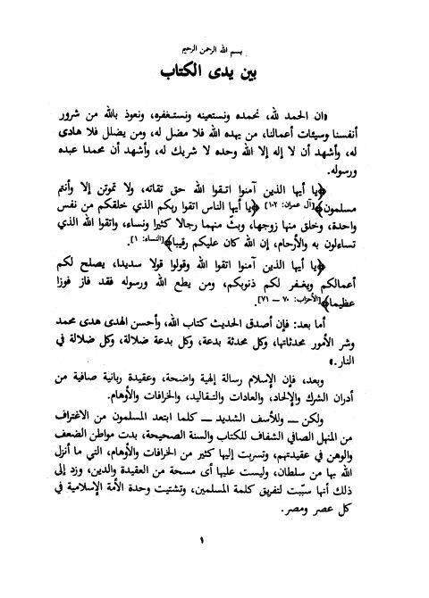
الزهر النضر في حال الخضر- ط. الهند الزهر النضر في حال الخضر- ط. الهند أحمد بن علي بن حجر العسقلاني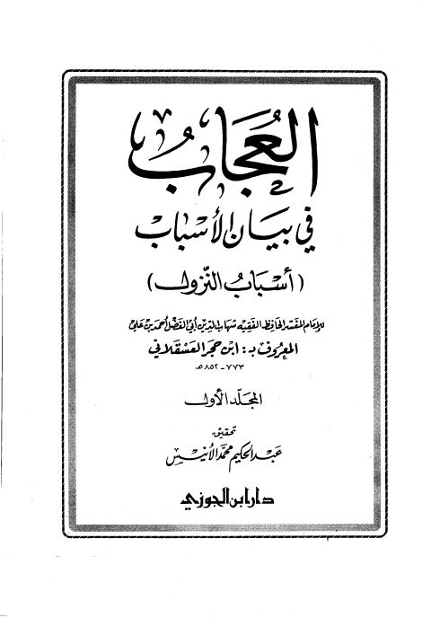
العجاب في بيان الأسباب أسباب النزول العجاب في بيان الأسباب أسباب النزول شهاب الدين أبو الفضل بن حجر العسقلاني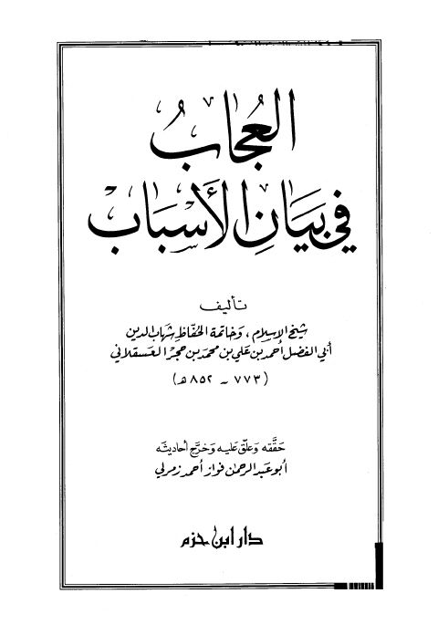
العجاب في بيان الأسباب العجاب في بيان الأسباب أحمد بن علي بن حجر العسقلاني هداية الرواة إلى تخريج أحاديث المصابيح والمشكاة وبهامشه النقد الصريح
هداية الرواة إلى تخريج أحاديث المصابيح والمشكاة وبهامشه النقد الصريح
أحمد بن علي بن حجر العسقلاني
هداية الرواة إلى تخريج أحاديث المصابيح والمشكاة وبهامشه النقد الصريح
هداية الرواة إلى تخريج أحاديث المصابيح والمشكاة وبهامشه النقد الصريح
أحمد بن علي بن حجر العسقلاني
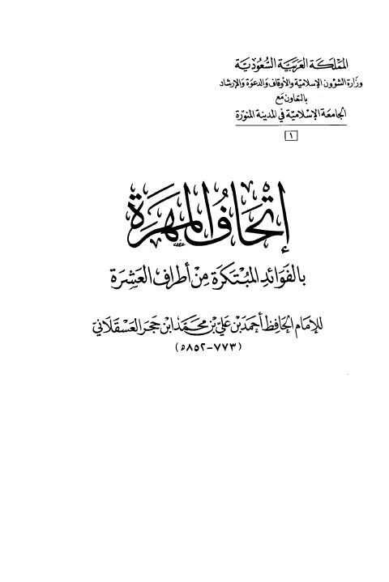
إتحاف المهرة بالفوائد المبتكرة من أطراف العشرة- أجزاء إتحاف المهرة بالفوائد المبتكرة من أطراف العشرة- أجزاء أحمد بن علي بن حجر العسقلاني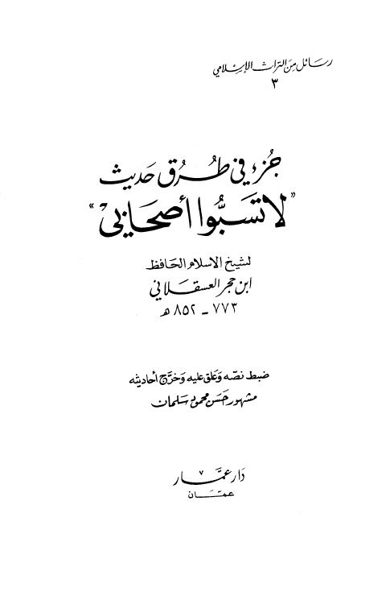
جزء في طرق حديث لا تسبوا أصحابي جزء في طرق حديث لا تسبوا أصحابي أحمد بن علي بن حجر العسقلاني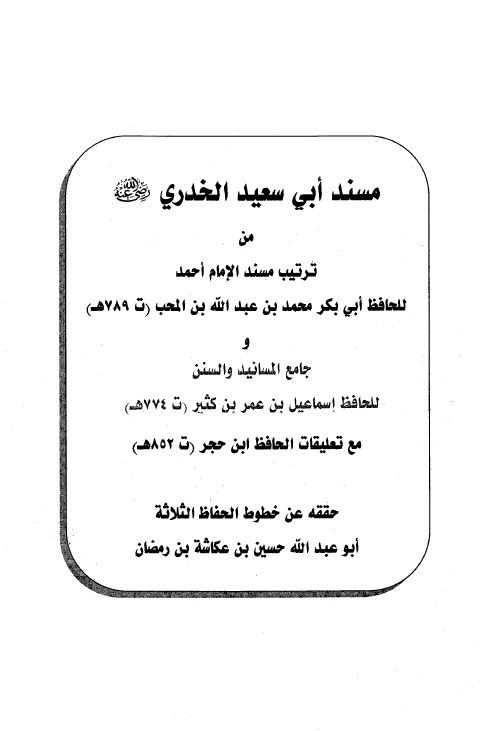
مسند أبي سعيد الخدري من ترتيب مسند الإمام أحمد وجامع المسانيد والسنن مسند أبي سعيد الخدري من ترتيب مسند الإمام أحمد وجامع المسانيد والسنن محمد بن عبد الله بن المحب • إسماعيل بن عمر بن كثير • ابن حجر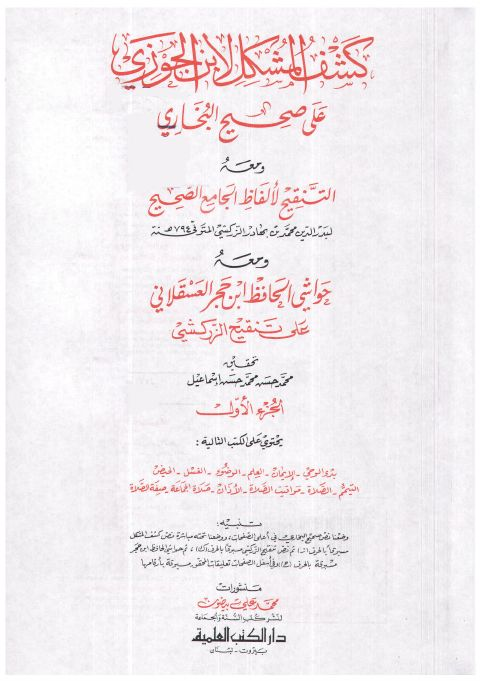
كشف المشكل لابن الجوزي على صحيح البخاري ومعه التنقيح لألفاظ الجامع الصحيح ومعه حواشي ابن حجر- ملون كشف المشكل لابن الجوزي على صحيح البخاري ومعه التنقيح لألفاظ الجامع الصحيح ومعه حواشي ابن حجر- ملون عبد الرحمن بن علي ابن الجوزي • الزركشي • ابن حجر كشف المشكل لابن الجوزي على صحيح البخاري ومعه التنقيح لألفاظ الجامع الصحيح ومعه حواشي ابن حجر
كشف المشكل لابن الجوزي على صحيح البخاري ومعه التنقيح لألفاظ الجامع الصحيح ومعه حواشي ابن حجر
عبد الرحمن بن علي ابن الجوزي • الزركشي • ابن حجر
كشف المشكل لابن الجوزي على صحيح البخاري ومعه التنقيح لألفاظ الجامع الصحيح ومعه حواشي ابن حجر
كشف المشكل لابن الجوزي على صحيح البخاري ومعه التنقيح لألفاظ الجامع الصحيح ومعه حواشي ابن حجر
عبد الرحمن بن علي ابن الجوزي • الزركشي • ابن حجر
 مجموع رسائل جمهرة رجال الجرح والتعديل
مجموع رسائل جمهرة رجال الجرح والتعديل
الصنعاني • ابن رجب • ابن حجر • العراقي • السيوطي • الجزائري
مجموع رسائل جمهرة رجال الجرح والتعديل
مجموع رسائل جمهرة رجال الجرح والتعديل
الصنعاني • ابن رجب • ابن حجر • العراقي • السيوطي • الجزائري
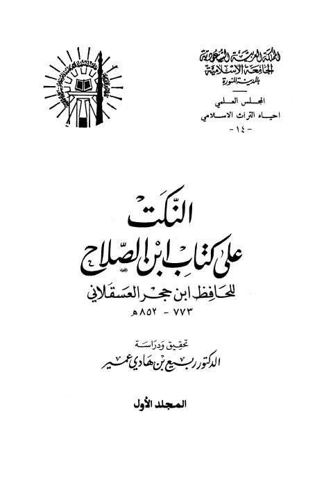
النكت على كتاب ابن الصلاح- ط الجامعة الإسلامية النكت على كتاب ابن الصلاح- ط الجامعة الإسلامية أحمد بن علي بن حجر العسقلاني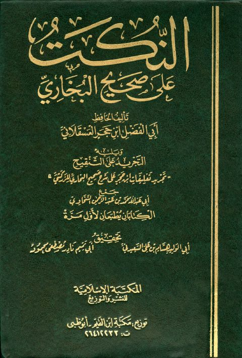
النكت على صحيح البخاري ويليه التجريد على التنقيح النكت على صحيح البخاري ويليه التجريد على التنقيح أحمد بن علي بن حجر العسقلاني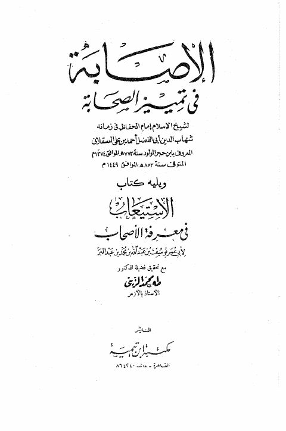
الإصابة في تمييز الصحابة يليه كتاب الاستيعاب في معرفة الأصحاب الإصابة في تمييز الصحابة يليه كتاب الاستيعاب في معرفة الأصحاب أحمد بن علي بن حجر العسقلاني • يوسف بن عبد الله محمد عبد البر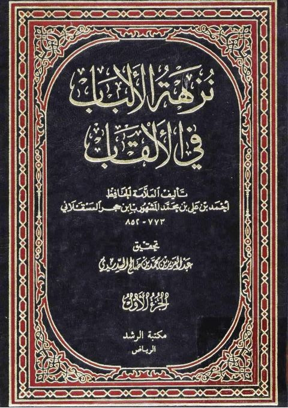
نزهة الألباب في الألقاب نزهة الألباب في الألقاب أحمد بن علي بن حجر العسقلاني تلخيص الحبير في تخريج أحاديث الرافعي الكبير
تلخيص الحبير في تخريج أحاديث الرافعي الكبير
أحمد بن علي بن حجر العسقلاني
تلخيص الحبير في تخريج أحاديث الرافعي الكبير
تلخيص الحبير في تخريج أحاديث الرافعي الكبير
أحمد بن علي بن حجر العسقلاني
 الدراية في تخريج أحاديث الهداية
الدراية في تخريج أحاديث الهداية
أحمد بن علي بن حجر العسقلاني
الدراية في تخريج أحاديث الهداية
الدراية في تخريج أحاديث الهداية
أحمد بن علي بن حجر العسقلاني
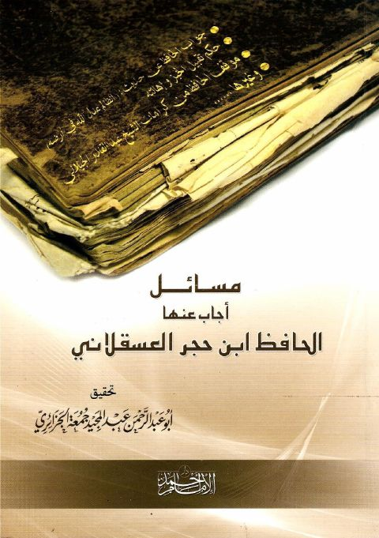
مسائل أجاب عنها الحافظ ابن حجر العسقلاني مسائل أجاب عنها الحافظ ابن حجر العسقلاني أحمد بن علي بن حجر العسقلاني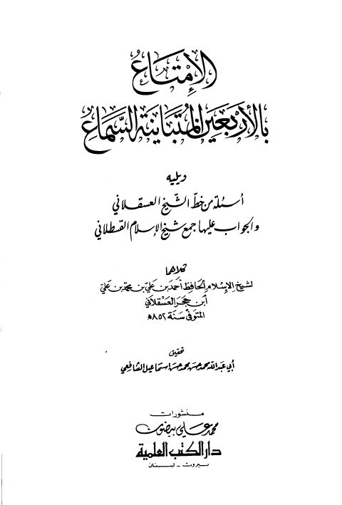
الإمتاع بالأربعين المتباينة السماع ويليه أسئلة من خط الشيخ العسقلاني والجواب عليها الإمتاع بالأربعين المتباينة السماع ويليه أسئلة من خط الشيخ العسقلاني والجواب عليها أحمد بن علي بن حجر العسقلاني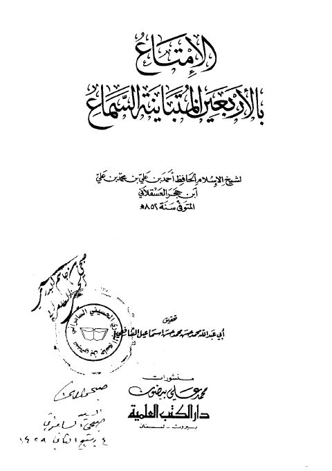
الإمتاع بالأربعين المتباينة السماع الإمتاع بالأربعين المتباينة السماع أحمد بن علي بن حجر العسقلاني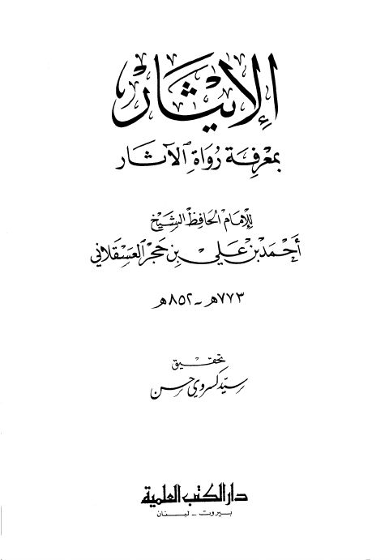
الإيثار بمعرفة رواة الآثار- ط العلمية الإيثار بمعرفة رواة الآثار- ط العلمية أحمد بن علي بن حجر العسقلاني الأحاديث العشرة العشارية الاختيارية
الأحاديث العشرة العشارية الاختيارية
أحمد بن علي بن حجر العسقلاني
الأحاديث العشرة العشارية الاختيارية
الأحاديث العشرة العشارية الاختيارية
أحمد بن علي بن حجر العسقلاني
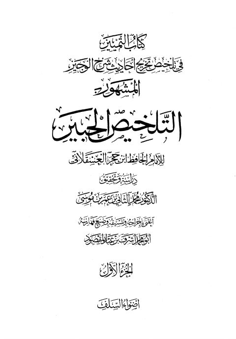
كتاب التمييز في تلخيص تخريج أحاديث شرح الوجيز المشهور التلخيص الحبير كتاب التمييز في تلخيص تخريج أحاديث شرح الوجيز المشهور التلخيص الحبير أحمد بن علي بن حجر العسقلاني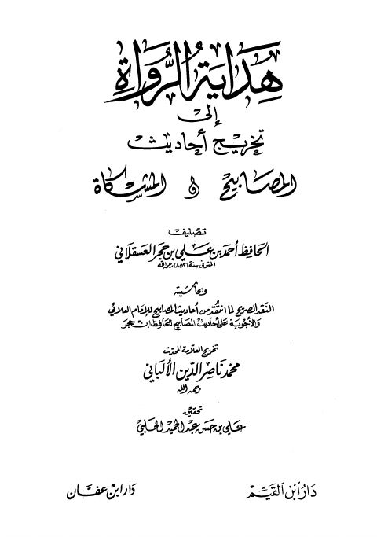
هداية الرواة إلى تخريج أحاديث المصابيح والمشكاة هداية الرواة إلى تخريج أحاديث المصابيح والمشكاة أحمد بن علي بن حجر العسقلاني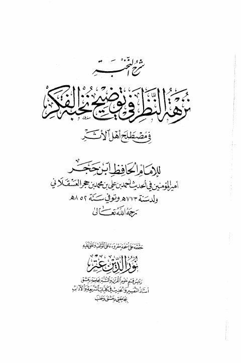
نزهة النظر في توضيح نخبة الفكر في مصطلح أهل الأثر نزهة النظر في توضيح نخبة الفكر في مصطلح أهل الأثر أحمد بن علي بن حجر العسقلاني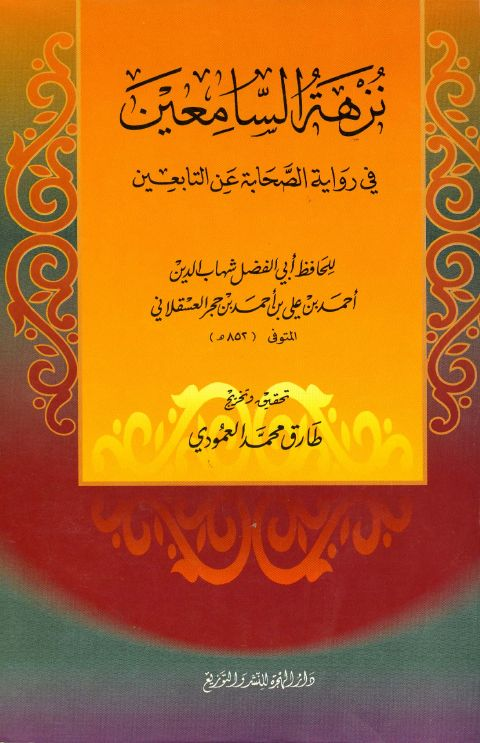
نزهة السامعين في رواية الصحابة عن التابعين نزهة السامعين في رواية الصحابة عن التابعين أحمد بن علي بن حجر العسقلاني المعجم المفهرس أو تجريد أسانيد الكتب المشهورة والأجزاء المنثورة- الرسالة
المعجم المفهرس أو تجريد أسانيد الكتب المشهورة والأجزاء المنثورة- الرسالة
أحمد بن علي بن حجر العسقلاني
المعجم المفهرس أو تجريد أسانيد الكتب المشهورة والأجزاء المنثورة- الرسالة
المعجم المفهرس أو تجريد أسانيد الكتب المشهورة والأجزاء المنثورة- الرسالة
أحمد بن علي بن حجر العسقلاني
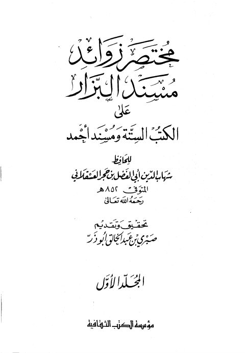
مختصر زوائد مسند البزار على الكتب الستة ومسند أحمد- ت. صبري مختصر زوائد مسند البزار على الكتب الستة ومسند أحمد- ت. صبري أحمد بن علي بن حجر العسقلاني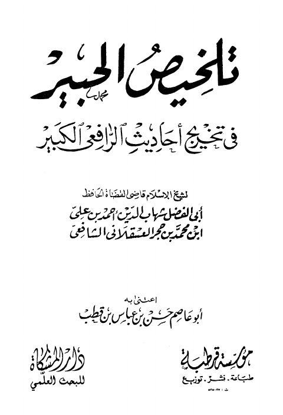
تلخيص الحبير في تخريج أحاديث الرافعي الكبير- مؤسسة قرطبة تلخيص الحبير في تخريج أحاديث الرافعي الكبير- مؤسسة قرطبة أحمد بن علي بن حجر العسقلاني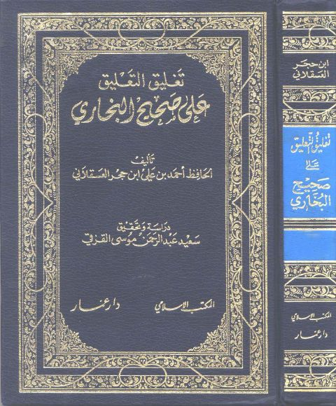
تغليق التعليق على صحيح البخاري تغليق التعليق على صحيح البخاري أحمد بن علي بن حجر العسقلاني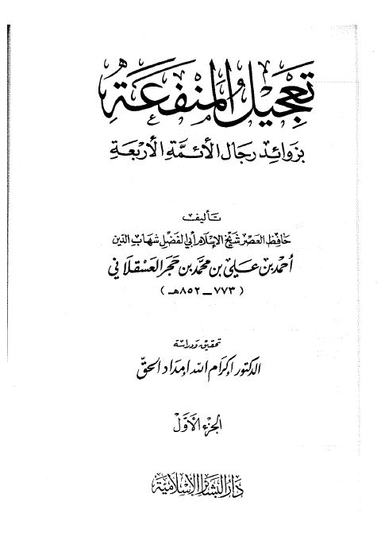
تعجيل المنفعة بزوائد الأئمة الأربعة- ط. البشائر تعجيل المنفعة بزوائد الأئمة الأربعة- ط. البشائر أحمد بن علي بن حجر العسقلاني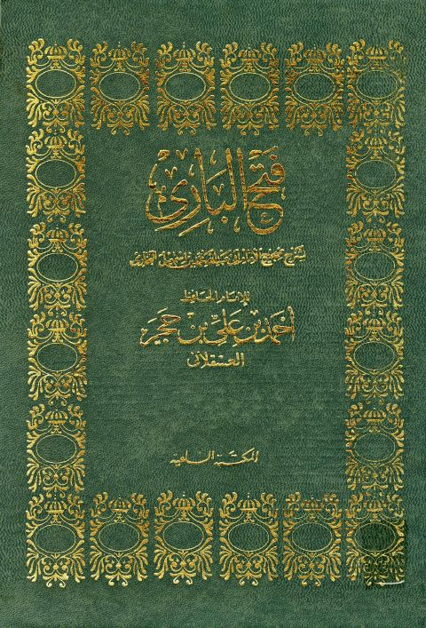
فتح الباري شرح صحيح البخاري -ط. السلفية- مدمجة فتح الباري شرح صحيح البخاري -ط. السلفية- مدمجة أحمد بن علي بن حجر العسقلاني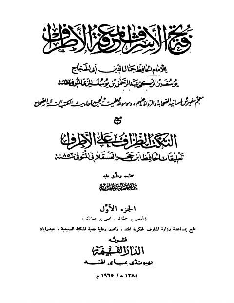
فتح الأشراف لمعرفة الأطراف لأبي الحجاج جمال الدين، مع النكت الطراف على الأطراف تعليقات ابن حجر فتح الأشراف لمعرفة الأطراف لأبي الحجاج جمال الدين، مع النكت الطراف على الأطراف تعليقات ابن حجر جمال الدين أبو الحجاج يوسف بن الزكي المزي • أحمد بن علي بن حجر العسقلاني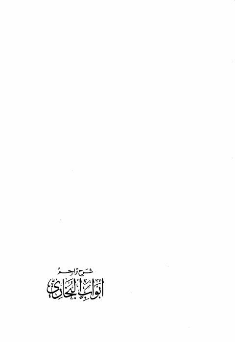
شرح تراجم أبواب البخاري شرح تراجم أبواب البخاري شاه ولي الله دهلوي • أحمد بن علي بن حجر العسقلاني سلسلة الذهب فيما رواه الإمام الشافعي عن مالك عن نافع عن ابن عمر ومعه المراسيل
سلسلة الذهب فيما رواه الإمام الشافعي عن مالك عن نافع عن ابن عمر ومعه المراسيل
أحمد بن علي بن حجر العسقلاني • سليمان بن أشعث السجستاني أبو داود
سلسلة الذهب فيما رواه الإمام الشافعي عن مالك عن نافع عن ابن عمر ومعه المراسيل
سلسلة الذهب فيما رواه الإمام الشافعي عن مالك عن نافع عن ابن عمر ومعه المراسيل
أحمد بن علي بن حجر العسقلاني • سليمان بن أشعث السجستاني أبو داود
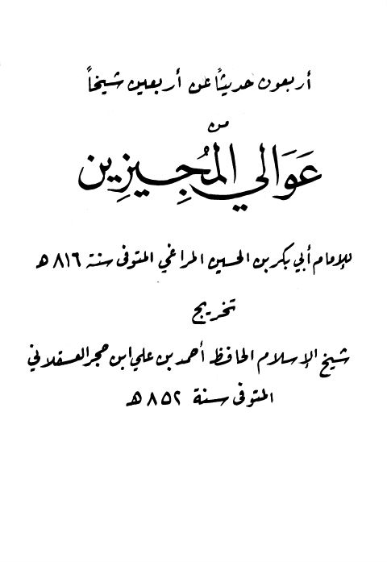
جزء فيه أربعون حديثا عن أربعين شيخًا من عوالي المجيزين جزء فيه أربعون حديثا عن أربعين شيخًا من عوالي المجيزين بن الحسين المراغي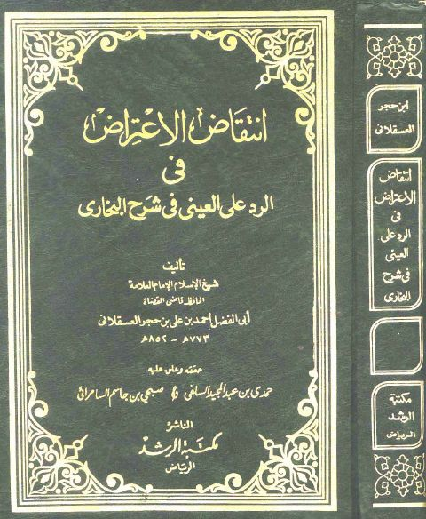
انتقاض الاعتراض في الرد على العيني في شرح البخاري انتقاض الاعتراض في الرد على العيني في شرح البخاري أحمد بن علي بن حجر العسقلاني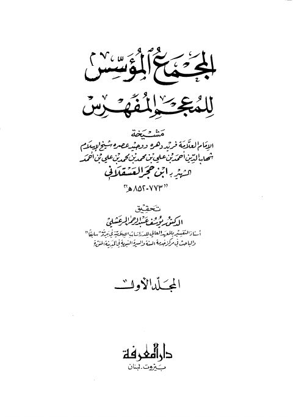
المجمع المؤسس للمعجم المفهرس- ط. دار المعرفة المجمع المؤسس للمعجم المفهرس- ط. دار المعرفة أحمد بن علي بن حجر العسقلاني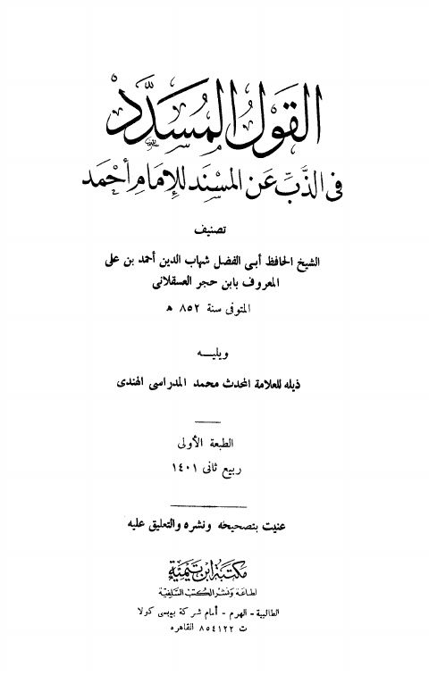
القول المسدد في الذب عن المسند للإمام أحمد- مكتبة ابن تيمية القول المسدد في الذب عن المسند للإمام أحمد- مكتبة ابن تيمية أحمد بن علي بن حجر العسقلاني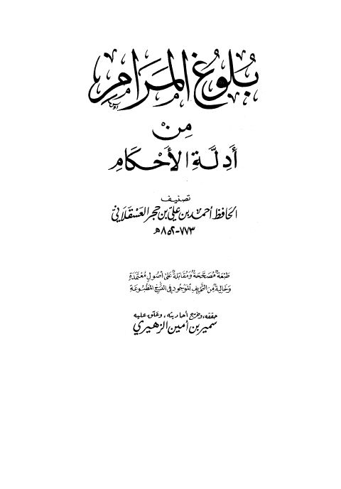
بلوغ المرام من أدلة الأحكام- الزهيري بلوغ المرام من أدلة الأحكام- الزهيري أحمد بن علي بن حجر العسقلاني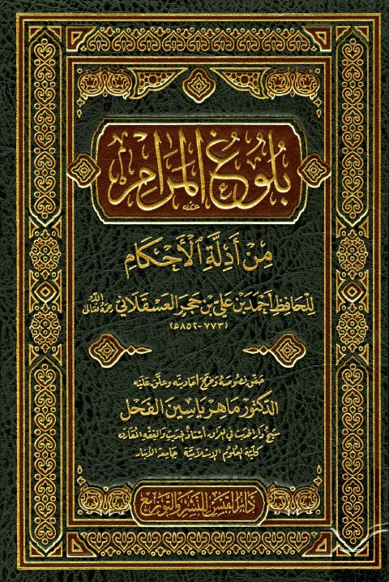
بلوغ المرام من أدلة الحكام- ماهر الفحل بلوغ المرام من أدلة الحكام- ماهر الفحل أحمد بن علي بن حجر العسقلاني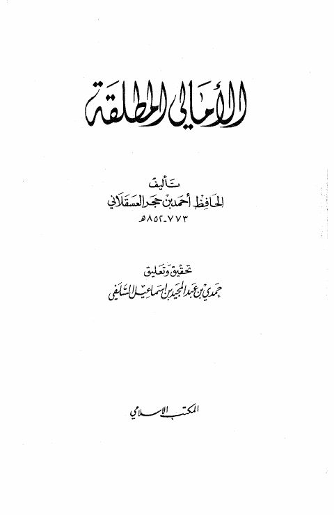
الأمالي المطلقة الأمالي المطلقة أحمد بن علي بن حجر العسقلاني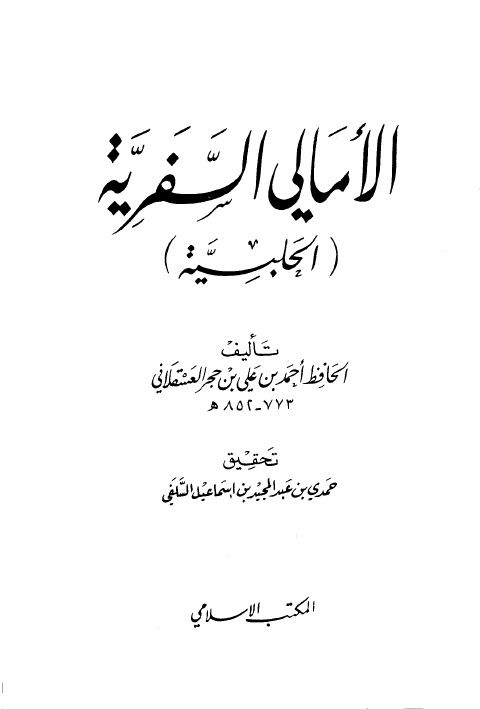
الأمالي السفرية الحلبية- المكتب الإسلامي الأمالي السفرية الحلبية- المكتب الإسلامي أحمد بن علي بن حجر العسقلاني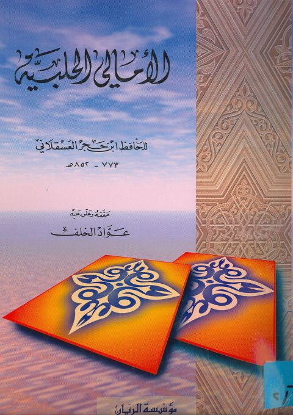
الأمالي الحلبية- ط. الريان الأمالي الحلبية- ط. الريان أحمد بن علي بن حجر العسقلاني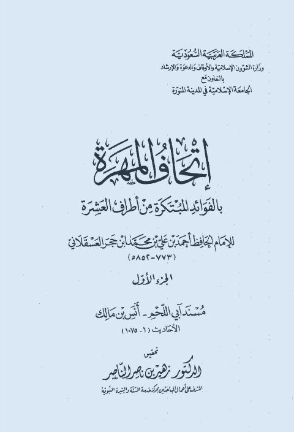
إتحاف المهرة بالفوائد المبتكرة من أطراف العشرة- مدمجة إتحاف المهرة بالفوائد المبتكرة من أطراف العشرة- مدمجة أحمد بن علي بن حجر العسقلاني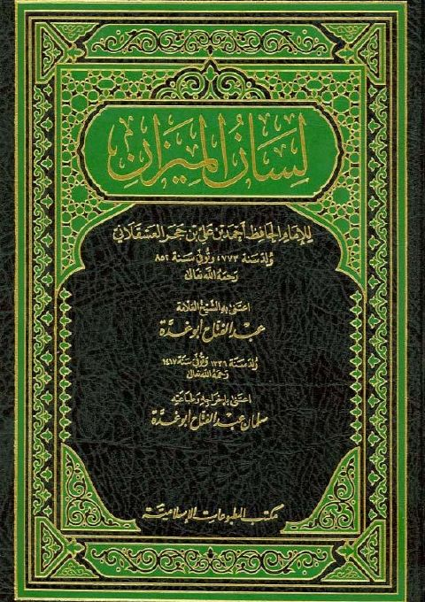
لسان الميزان لسان الميزان أحمد بن علي بن حجر العسقلاني شرح تراجم أبواب البخاري
شرح تراجم أبواب البخاري
شاه ولي الدين دهلوي والحافظ ابن حجر العسقلاني
شرح تراجم أبواب البخاري
شرح تراجم أبواب البخاري
شاه ولي الدين دهلوي والحافظ ابن حجر العسقلاني
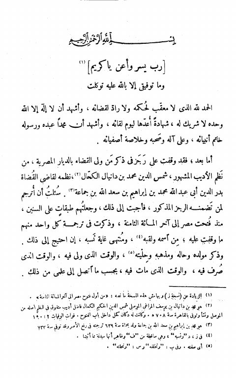
رفع الإصر عن قضاة مصر رفع الإصر عن قضاة مصر أحمد بن علي بن حجر العسقلاني رفع الإصر عن قضاة مصر- ط. الخانجي رفع الإصر عن قضاة مصر- ط. الخانجي أحمد بن علي بن حجر العسقلاني المعجم المفهرس أو تحرير أسانيد الكتب المشهورة والأجزاء المنثورة
المعجم المفهرس أو تحرير أسانيد الكتب المشهورة والأجزاء المنثورة
أحمد بن محمد علي بن حجر العسقلاني
إنباء الغمر بأبناء العمر- ط العثمانية
إنباء الغمر بأبناء العمر- ط العثمانية
شهاب الدين أبي الفضل أحمد بن علي بن حجر العسقلاني
المعجم المفهرس أو تحرير أسانيد الكتب المشهورة والأجزاء المنثورة
المعجم المفهرس أو تحرير أسانيد الكتب المشهورة والأجزاء المنثورة
أحمد بن محمد علي بن حجر العسقلاني
إنباء الغمر بأبناء العمر- ط العثمانية
إنباء الغمر بأبناء العمر- ط العثمانية
شهاب الدين أبي الفضل أحمد بن علي بن حجر العسقلاني
 الدرر الكامنة في أعيان المائة الثامنة -المعارف العثمانية- أجزاء
الدرر الكامنة في أعيان المائة الثامنة -المعارف العثمانية- أجزاء
أحمد بن محمد بن علي بن حجر العسقلاني
الدرر الكامنة في أعيان المائة الثامنة -المعارف العثمانية- مدمجة
الدرر الكامنة في أعيان المائة الثامنة -المعارف العثمانية- مدمجة
أحمد بن محمد بن علي بن حجر العسقلاني
جمهرة النوادر المسندة 4، كتاب الأوائل للشيباني، كتاب الأوائل للطبراني، كتاب المكافأة وحسن العقبى، الأربعون في ردع المجرم عن سب المسلم
جمهرة النوادر المسندة 4، كتاب الأوائل للشيباني، كتاب الأوائل للطبراني، كتاب المكافأة وحسن العقبى، الأربعون في ردع المجرم عن سب المسلم
أحمد بن عمرو بن أبي عاصم الشيباني • سليمان بن أحمد الطبراني • أحمد بن يوسف الكاتب • أحمد بن علي ابن حجر العسقلاني
الدرر الكامنة في أعيان المائة الثامنة -المعارف العثمانية- أجزاء
الدرر الكامنة في أعيان المائة الثامنة -المعارف العثمانية- أجزاء
أحمد بن محمد بن علي بن حجر العسقلاني
الدرر الكامنة في أعيان المائة الثامنة -المعارف العثمانية- مدمجة
الدرر الكامنة في أعيان المائة الثامنة -المعارف العثمانية- مدمجة
أحمد بن محمد بن علي بن حجر العسقلاني
جمهرة النوادر المسندة 4، كتاب الأوائل للشيباني، كتاب الأوائل للطبراني، كتاب المكافأة وحسن العقبى، الأربعون في ردع المجرم عن سب المسلم
جمهرة النوادر المسندة 4، كتاب الأوائل للشيباني، كتاب الأوائل للطبراني، كتاب المكافأة وحسن العقبى، الأربعون في ردع المجرم عن سب المسلم
أحمد بن عمرو بن أبي عاصم الشيباني • سليمان بن أحمد الطبراني • أحمد بن يوسف الكاتب • أحمد بن علي ابن حجر العسقلاني